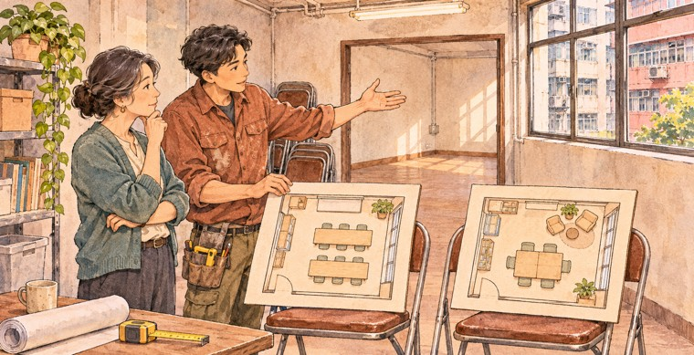

FIN-08 · 香港 · 10–15分鐘 · 金融 · 投資評估 · 回本期與現值
回來得早，是否更有價值？

新聞裏 · 看完整段投資壽命
2026年7月8日，投資推廣署公佈一項香港科技大學樓宇改造工程合約。施耐德電氣和威立雅將墊付前期投資，並在15年內通過經核實的節能收回。
公佈的是這項安排，不是已經實現的節能。它提醒我們：投資要看時間跨度。下面自籌資金的培訓室和估計數字都是虛構的，與該項目無關。
課堂決定
虛構的課堂情境。 香港一間培訓室有一間空房，兩套裝修方案只能選一套。A配合已經成熟的短期課程，前期需求較強。B配合一個預期會慢慢做起來的課程。
兩套今天都要花100,000港元，佔用的都是租約剩下的同樣四年。房間只能給一套用。兩套都不做，也是可以的。現金和經營儲備夠做任何一套；現有課程的資金不受影響。
負責人的撮要說，A在第2年年末回本，B在第3年年末回本。她問：「為甚麼要多等一年？」完整的四年估計尚未比較。
| 初步撮要 · 港元 | 方案A | 方案B |
|---|
| 今天的全部支出 | 100,000 | 100,000 |
| 第1年淨收款 | 60,000 | 20,000 |
| 第2年淨收款 | 40,000 | 40,000 |
| 報告的簡單回本期 | 第2年年末 | 第3年年末 |
淨收款是增量現金：已經扣掉相關經營成本、維修保養、營運資金變動和稅項，不是銷售額，也不是會計利潤。全部收款都放在年末。裝修在第4年之後沒有處置收入，也沒有其後的現金流。
你的決定你會暫時偏向哪一套？回本期較短，是否就足以拍板？這項比較還缺甚麼？
第二輪 · 改了一個事實
會計做完了全期覆核。A預計第3年和第4年各收10,000港元。B預計這兩年各收60,000港元。較早的數字不變。覆核也確認：房間四年都能用，兩種時間分佈都有資金。
| 完整預測 · 港元 | 方案A | 方案B |
|---|
| 今天的支出 | 100,000 | 100,000 |
| 第1年淨收款 | 60,000 | 20,000 |
| 第2年淨收款 | 40,000 | 40,000 |
| 第3年淨收款 | 10,000 | 60,000 |
| 第4年淨收款 | 10,000 | 60,000 |
本練習裏，兩套方案的預測風險相當，題目給出的要求回報率是每年10%。把每年的淨收款都換成今天的價值，A約為101,947港元，B約為137,299港元，均已四捨五入。各自減去100,000港元的支出，淨現值（NPV）分別為1,947港元和37,299港元。
這些是覆核過的規劃估計，不是保證能招到的學員，也不是已經賺到的現金。10%是課堂假設，不是貸款報價。
你的決定為了回本更快而留A，為了模型淨現值更高而選B，還是兩套都不做？說明你的建議，並指出一項可能改變它的假設。
回本只回答一個問題
A頭兩年的收款合計100,000港元，在第2年年末收回最初支出。到那時B只收回60,000港元；第3年的收款使累計達到120,000港元，所以B的回本期在第3年年末。
回本期問的是投資何時收回。它不計此後收款的全部價值，簡單回本期也不調整貨幣的時間價值。現金緊、或者真正能用的年限很短時，更早收回仍然重要。
先把各年放到同一個立足點上
要求回報率是10%時，一年後收到的1,100港元，現值是1,000港元。要在今天比較方案，第1年的收款除以1.10，第2年除以1.10的平方，依此類推。
四年折現後的收款加總，A約為101,947港元，B約為137,299港元。減去相同的期初支出，淨現值約為1,947港元和37,299港元。這些金額已經包含時間價值的調整；未經折現的盈餘20,000港元和80,000港元，是另一種度量。
按這些事實，選全期更強的那一套
在給定假設下，B更強。兩套的模型淨現值都為正，但房間只能給一套，而B在要求回報率下貢獻的價值更多。它勝出，是儘管回本較遲，不是因為較遲的現金天生更好。
A仍然是做得到的替代方案，但在這裏，回本更快不足以壓過全期比較：資金和四年使用權都明確存在。兩套都不做，需要這些預測和要求回報率以外的理由。
預測要保持誠實
淨現值更高，並不是承諾今天的銀行結餘會上升這個數，也不是報告上的會計利潤。它是由選定的現金流估計、時間和要求回報率推出來的價值。
如果後期招生不如預期、房間更早不能用、風險明顯不同，或者儲備不再夠用，就要重新比較。真實的流動性約束可以令較早的收款更有價值；這一點要單獨審視，不能在算完之後悄悄假定它不存在，也不能事後編造。
教師說明
先做一次暫時投票，再公佈後期收款和給定的現值總額。學生不必計算乘方，也不必閱讀外部資料，就可以解釋選擇。問他們簡單回本期量的是甚麼、漏掉了甚麼。
可選計算：NPV = −100,000 + C₁/1.10 + C₂/1.10² + C₃/1.10³ + C₄/1.10⁴。未四捨五入的結果是1,946.59港元和37,299.36港元。現金在年末到達，所以不要把B的回本期插值成2.67年。
項目相關的現金變動已經全部計入；這項自籌資金的比較，不要再扣折舊，也不要加上貸款利息。給定的折現率代表要求回報率。本個案超出Case 7的一年期估值，也不同於Case 62的貸款償還比較。不要把它做成內部收益率或稅務練習。
第二輪
會計做完了全期覆核。A預計第3年和第4年各收10,000港元。B預計這兩年各收60,000港元。較早的數字不變。覆核也確認：房間四年都能用，兩種時間分佈都有資金。
| 完整預測 · 港元 | 方案A | 方案B |
|---|
| 今天的支出 | 100,000 | 100,000 |
| 第1年淨收款 | 60,000 | 20,000 |
| 第2年淨收款 | 40,000 | 40,000 |
| 第3年淨收款 | 10,000 | 60,000 |
| 第4年淨收款 | 10,000 | 60,000 |
本練習裏，兩套方案的預測風險相當，題目給出的要求回報率是每年10%。把每年的淨收款都換成今天的價值，A約為101,947港元，B約為137,299港元，均已四捨五入。各自減去100,000港元的支出，淨現值（NPV）分別為1,947港元和37,299港元。
這些是覆核過的規劃估計，不是保證能招到的學員，也不是已經賺到的現金。10%是課堂假設，不是貸款報價。
你的決定為了回本更快而留A，為了模型淨現值更高而選B，還是兩套都不做？說明你的建議，並指出一項可能改變它的假設。